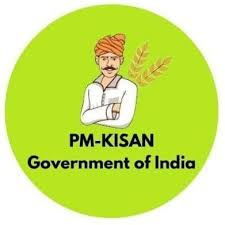

Pradhan Mantri Kisan Samman Nidhi or PM-KISAN is one of the most famous government-funded agriculture schemes in India that aims to provide ample income support to small and marginal farmers in India. It was launched in 2019 and aims to provide necessary funds to Indian farmers so that they can take care of basic farming needs.
○ The main objective of the scheme is to transfer an amount of INR 6000 to the account of farmers annually.
This remuneration is paid in three equal installments of INR 2000 each every four months directly into the farmers' account.
○ All the farmers owning up to two hectares, as per land records of States/UT, are eligible
○ The primary beneficiaries are small and marginal land-holding farmer families.